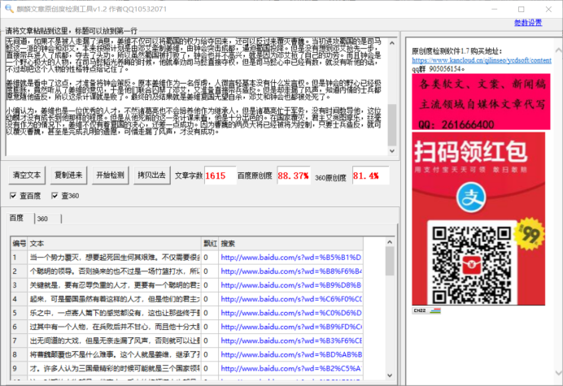

《三国演义》中蜀国兵败，他用了一个计谋差一点让曹魏覆灭。
当一个势力覆灭，想要起死回生何其艰难。不仅需要很多人才的忍辱负重，更需要又一个聪明的领导。否则换来的也不过是一场竹篮打水，所以说看待一个人能否东山再起的关键就是，要有忍辱负重的人才，更要有一个聪明的君主，这样才有机会再一次的站立起来，可是蜀国虽然有着这样的人才，但是他们的君主太不成器，只知道成天沉浸在享乐之中，一点寄人篱下的感觉都没有，这也让那些终于蜀汉蜀汉的大臣们伤透了心。不过其中有一个人物，在兵败后并不甘心，而且他十分大胆的使用了一个计谋，上演了一出无间道的大戏，但是无奈走漏了风声，否则就可以让蜀国再一次的站立起来，甚至是将曹魏颠覆也不是什么难事。这个人就是姜维，继承了孔明遗志，被后世称作幼麟的人才。
许多人认为三国最精彩的时候可能就是三个国家领导人物都在世的这时候，在这一时期的人物都是一代豪杰，手中的将领谋士也都是一等一的人才，但是当他们去世之后，精彩的部分就只有诸葛亮与曹魏的斗智斗勇了，再往后，那些新时期的人才仿佛就没有了什么亮点。其实不然，听他们只不过是将明面的斗争，转移到了暗中。因为刚开始的时候是一个乱世，而且魏蜀吴的势力只能说是初具规模，必须凭借武力来攻城略地，扩展自己的版图。也是在这一时期，涌现出了许多的英雄豪杰，他们的勇猛忠义，他们的智谋让人钦佩。之后在赤壁标志着三个国家成立，二期而他们的斗争已经不再是简简单单的军事斗争，而是转移到了经济与人才的比拼。这一时期的曹操占据了先机，因为中原人口众多，他又大批量的从寒门之中选拔人才，而且还是唯才是举，不考虑个人的品德。
相比之下江东和蜀国就有些费力了，因为他们的地域狭小，人才很难产生。尤其是当初刘备不顾一切的攻打江东，让蜀国遭受了巨大的损失，在这一场战争中。蜀国流失了许多人才，有的死在战争中，有的投靠了别的势力，而且连自己的几十万军队都没有幸免。江东同样不好过，虽然战胜了但是对内部的消耗还是很大的，再加上孙权后期不理朝政。导致整个江东的内部陷入争权夺利的状态。最终的记过就是曹魏成了最后的赢家。但是这一时期的曹魏也已经换了主人，真正做主的其实是司马家，所在三国的后期每个国家都有一本难念的经。后来曹魏主动出击，首先覆灭了蜀国，之后又把江东给平定了。对这一时期大家好像也失去了兴趣，因为再也没有出现像诸葛亮那样让人眼前一亮的人物，所有的事情都是实力的碾压。
不过在蜀国覆灭之后，还是有着很多人不甘心的，他们都希望可以东山再起，尤其是孔明选中的继承人姜维，他就玩了一把无间道，如果不是被人走漏了消息，姜维不仅可以将蜀国的权力给夺回来，还可以反过来覆灭曹魏。当初进攻蜀国的是司马懿这一派的钟会和邓艾，本来按照计划是由邓艾牵制姜维，由钟会突击成都，逼迫蜀国投降。但是没有想到邓艾抢先一步，直接带兵进入了成都，夺去了头功。所以虽然蜀国被打败了，钟会也并不高兴，就是因为邓艾抢了自己的功劳。而且钟会是一个野心极大的人物，在司马懿韬光养晦的时候，他就奉劝司马懿直接夺权，但是司马懿心中已经有数，就没有听他的话，不过却把这个人物的性格特点给记住了。
姜维就是看中了这点，才准备将钟会策反。原本姜维作为一名俘虏，人微言轻基本没有什么发言权。但是钟会的野心已经极度膨胀，竟然听从了姜维的意见，于是他们联合囚禁了邓艾，又准备直接带兵造反。但是却走漏了风声，知道内情的士兵都愿意随他造反，所以这条计谋就是败了。最终的及结果就是姜维复国无望自杀，邓艾和钟会也都被处死了。
小编认为，姜维也是一位优秀的人才，不然诸葛亮也不会培养他作为继承人，但是诸葛亮忙于军务，没有时间教导他，这位幼麟才没有成长到他那样的程度。但是从他死前的这一条计谋来看，他是十分出色的。在国家覆灭，君主又贪图享乐，丝毫没有作为的情况下，姜维不仅有着复国的决心，还差一点成功。因为曹魏的两员大将已经被将为控制，只要士兵造反，就可以覆灭曹魏，甚至是完成孔明的遗愿，可惜走漏了风声，才没有成功。
